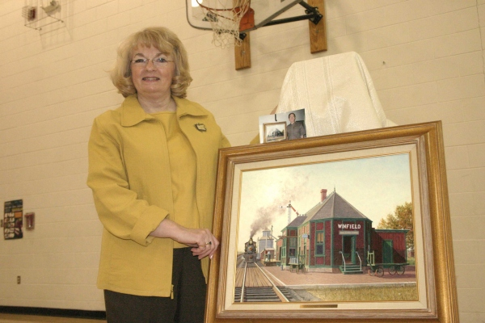

February
2007
The Winfield Historical Society & Museum was the recipient of a painting, "Winsome Winfield," by acclaimed artist Bob Eckel, of Peoria, Arizona. The painting was unveiled Monday at Winfield's Railroad Day by Judy Rawson, museum president. Rawson's sister, Patty Butler, who lives in Arizona, started the ball rolling many months ago. Patty is good friends with the artist and his wife, Noreda. When Bob offered to paint a picture for Patty, she thought of Winfield and the two old depots that were once here. Thanks to Patty, the museum board got in touch with Bob and arranged to have our C. B. & Q. Depot immortalized. The painting just arrived and will be on display at the museum and the public is invited to view it on Mondays 10 to Noon.
We are extremely pleased with the results. Bob's attention to detail is incredible and you really feel like you are stepping back in time looking at the picture, it's so real! While the depot is now privately owned and still standing, it's "glory days" are long gone, so it's great to have this outstanding painting to remind us how transportation use to be in Henry County.
Let me tell you a little about the artist. Bob Eckle is nationally acclaimed with work on permanent display in Bellows Falls, Vermont, at the Steamboat U.S.A. Exhibit; the Pennsylvania Railroad Historical Museum; and the White House. He has appeared in many publications including Arizona Highways. He has also appeared on television and won countless awards.
Bob was born in New Haven, Connecticut. He has been a railroad buff since childhood and his love of railroading shows with nostalgic charm and use of color. His wife, Noreda, is given credit with discovering his sketches and encouraging him to start painting. His formal art training was at the Wyomissing Institute of Fine Arts and Penn State University. When he moved to Arizona he attended Phoenix College and Arizona State University earning his Fine Arts degree from Grand Canyon College.
He prefers to work in oils, but is adept at watercolor, pen and ink. The Winfield painting is done in the Old Masters technique, using nine layers with high attention to detail. The late Johnny Cash was among the many who owned one of Eckle's paintings. The Winfield Historical Society feels very honored to also share his talent.